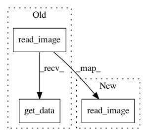

e6a8a482f15803b24fc4bda6e2a0bd001ca77c87,data.py,,read_subject_folder,#,60
Before Change
flair_image = read_image(os.path.join(folder, "Flair.nii.gz"), image_shape=image_shape, crop=crop)
t1_image = read_image(os.path.join(folder, "T1.nii.gz"), image_shape=image_shape, crop=crop)
t1c_image = read_image(os.path.join(folder, "T1c.nii.gz"), image_shape=image_shape, crop=crop)
truth_image = read_image(os.path.join(folder, "truth.nii.gz"), image_shape=image_shape,
interpolation="nearest", crop=crop)
return np.asarray([t1_image.get_data(), t1c_image.get_data(), flair_image.get_data(), truth_image.get_data()])
def read_image(in_file, image_shape, interpolation="continuous", crop=None):
After Change
for modality in config["training_modalities"]:
data_list.append(read_image(os.path.join(folder, modality + ".nii.gz"), image_shape=image_shape,
crop=crop)).get_data()
data_list.append(read_image(os.path.join(folder, "truth.nii.gz"), image_shape=image_shape, interpolation="nearest",
crop=crop))
return np.asarray(data_list)
In pattern: SUPERPATTERN
Frequency: 3
Non-data size: 3
Instances
Project Name: ellisdg/3DUnetCNN
Commit Name: e6a8a482f15803b24fc4bda6e2a0bd001ca77c87
Time: 2017-04-07
Author: david.ellis@unmc.edu
File Name: data.py
Class Name:
Method Name: read_subject_folder
Project Name: ellisdg/3DUnetCNN
Commit Name: c8b1cf5ae63f817e0463199d54f75da7deab0265
Time: 2017-05-19
Author: david.ellis@unmc.edu
File Name: unet3d/utils/utils.py
Class Name:
Method Name: read_image_files